Overview
When we talk about digital product design, we usually frame the problem around conversion, engagement, or onboarding friction. For EWM4Y, the framing is entirely different: if a survivor uses this app and their abuser discovers it, what happens to them?
EWM4Y — Enhancing Wellness M4Y — is a platform designed to help immigrant women and youth who are experiencing or recovering from violence. Many of its users are actively monitored: their phones checked, their browsing history inspected, their movements tracked. A poorly designed interface, in this context, is not just frustrating. It can be dangerous.
The design challenge wasn't how to make the experience better. It was how to make it invisible when it needed to be, and trustworthy when it wasn't.
The Problem
Immigrant survivors face compounding barriers: language gaps, distrust of institutions, cultural stigma, and digital surveillance by abusers. Existing resources are out of reach if a survivor can't safely search for them. A digital tool that exposes its user's intent can cause direct harm.
The Approach
A privacy-first, low-cognitive-load interface that prioritizes disguised identity, one-tap exit, multilingual access, and emotionally safe content architecture. Every feature was evaluated not just for usability, but for what it would reveal to a hostile observer.
Key Outcomes
Quick Exit on every screen. Zero personal data stored during safety assessment. AI-assisted risk triage through a calm chat interface. Language selection surfaced at app entry. Visual identity designed to read as a general wellness app.
What Made This Different
This was not a standard mobile UX project. Every design decision carried ethical weight. The users this app serves are vulnerable, often in ongoing danger, and the design had to account for the worst-case scenario at every step.
Design Approach
Trauma-informed design is not a checklist of features. It is a way of thinking that asks, at every stage: what is this user carrying when they arrive here, and how does this design respond to that weight?
Survivors of violence often experience hypervigilance, difficulty concentrating, distrust of systems, and fragmented cognitive processing. These are not edge cases — they are the baseline state for the people this app was built for. That made standard design heuristics insufficient. "Progressive disclosure" means something different when a user is afraid someone is watching over their shoulder. "Onboarding" means something different when a user may need to exit the screen in under three seconds.
Every screen was evaluated against a single question: if an abuser picks up this phone, what does this screen reveal about where the user has been and what they were doing? This became the core lens for all design decisions.
The process was deliberately iterative and cautious. Rather than moving quickly through high-fidelity prototypes, the team spent time pressure-testing feature logic — asking whether safety assessment flows could be exploited or misread. Features that created any ambiguity around user intent or privacy were modified or removed. Safety principles weren't added at the end as a feature set. They were the foundation from which every other decision branched.
Understanding the Users
The target user base for EWM4Y is specific: immigrant women and youth who are survivors of violence — many of whom are currently in unsafe situations or have recently left them. Understanding this population meant understanding not just their goals, but the conditions under which they pursue those goals.
The Woman in Immediate Danger
She needs to access help fast, without leaving a trace. She may have minutes, not hours. Every additional step is a risk. She cannot afford confusing navigation or an interface that exposes her intent. Speed and invisibility are her primary needs.
The Cautious Seeker
She is not in immediate danger but is quietly assessing her situation. She distrusts institutions. She needs content that doesn't feel clinical or alarming — something that feels like a private, non-judgmental space. Trust is her primary need.
The Survivor Rebuilding
She has left her situation and is looking for resources: counseling, legal aid, community. She may have low English proficiency or low digital literacy. Clarity, accessible language, and a calm, empowering tone are her primary needs.
Discretion Above All
The interface must not reveal its purpose to someone who picks up the phone. App identity, screen labels, and navigation language all need to be evaluated through this lens. A feature that works beautifully but exposes its user is a failed feature.
Radical Simplicity
Cognitive load from ongoing trauma means a user may not be able to process complex menus, multi-step flows, or unfamiliar terminology. Every element that isn't essential creates friction that can result in abandonment at a critical moment.
Trust Without Credentials
Users may distrust apps that ask for account creation, personal information, or location access. Trust must be earned through design signals — not data collection. The Safety Assessment Tool operates with no login and stores nothing.
Language as Access
For users with low English proficiency, a monolingual app is no app at all. The language selector must appear at entry — not in settings — because a user who can't read the interface cannot navigate to change it. Language accessibility is not optional; it determines whether the app is usable at all.
Core Design Principles
These principles were derived directly from the PRD and applied as consistent design guidelines across every screen and flow. Each one maps directly to a user risk or need — they are not aesthetic preferences, but functional requirements.
Privacy-First by Default
Safety is not opt-in. Auto-clear sessions, no data storage in the SAT, and disabled password autosave are not features — they are the baseline. The app assumes the worst-case scenario for every session.
Disguised Interface
The app's visual identity and labeling are designed to read as a general wellness app. Screen content avoids alarming language on initial views, reducing exposure risk if the screen is seen by a hostile observer.
Low Cognitive Load
Minimal text per screen. Plain language. One primary action per view. The interface never demands complex decision-making in a moment of distress — it removes decisions by making the right path obvious.
Multilingual Accessibility
Language selection is surfaced at app entry, not in settings. Supported languages include English, Spanish, Farsi, Punjabi, Chinese, Filipino, and Eastern European languages. Content is written in plain language first, then translated.
Empathy Over Efficiency
The tone is calm, warm, and non-clinical. Labels like "Find Help" replace institutional language. The AI chatbot is designed to feel like a quiet conversation — not a form. The app should feel like support, not a system.
Fast Exit, Always
A Quick Exit button is visible on every screen. One tap exits the app and redirects to a neutral site, leaving no trace. This is non-negotiable: users must be able to disappear instantly, regardless of where they are in a flow.
Information Architecture
Information architecture for EWM4Y could not follow conventional patterns. In most apps, hierarchy is determined by usage frequency, business goals, or research about feature importance. Here, hierarchy was determined by urgency and risk. Features that could protect a user in an immediate crisis were prioritized over features used more often.
The bottom navigation has five items. The choice of which five, and in what order, was a safety decision.
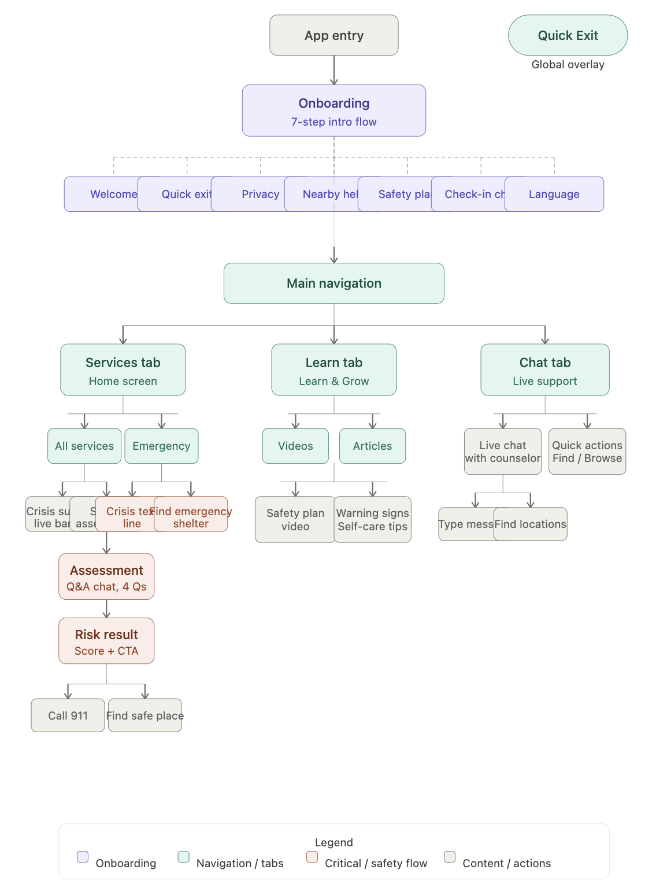
Immediate Orientation Toward Help
Entry point with live crisis support banner, service search, and category access. The first screen a user sees is oriented toward action — not organizational information about the platform.
Local Resources Within Reach
Local resource locator filtered by proximity and service category. Phone numbers are displayed for copying, not auto-dialing, to avoid creating a call record on the user's device.
Anonymous Safety Assessment
AI-assisted safety assessment with no login, no data stored, and auto-clear on exit. Accessed through a tab labeled "Risk Tool" — neutral enough to pass a casual glance.
Safety Planning, Your Way
Modular safety planning checklist with download, print, and trusted-contact share options. Labels are deliberately indirect to avoid identifying the document if it is seen by the wrong person.
Always There
The Quick Exit occupies one of the five navigation slots — a deliberate trade-off that sacrifices a standard navigation item so that the fastest path to safety is always within thumb reach.
Ideation & Feature Structure
Ideation for this project required a different creative constraint than most design work. Rather than asking "how do we delight the user," the guiding question was: what does a person in fear actually need, and what form does that take on a screen?
Safety Assessment Tool
The most sensitive feature to structure. The challenge: how do you make a user feel safe enough to answer honestly about their situation, while ensuring those answers can never be used against them? The solution: no login, no storage, conversational AI format, auto-clear on exit. The flow ends with a risk level and a direct recommendation — Low, Medium, or High risk — with appropriate resources surfaced immediately.
Stay Safe — Safety Planning
Safety planning is a recognized domestic violence intervention: helping a person think through what to do if their situation escalates. Translating this into a digital interface meant deciding how to label things, how much to explain, and how to ensure the plan itself didn't become evidence. The result: modular checklist, download/print options, share with trusted contact, and deliberately indirect labels throughout.
Find Help — Resource Locator
Designed around two key behaviors: search by proximity (up to 25 miles) and filter by service type. Critically, phone numbers are designed to be copied rather than auto-dialed. Auto-dialing creates a call record; copying allows the user to call from a different device or public phone. This single design decision — copy vs. dial — is the kind of safety-informed detail that a standard UX process might miss entirely.
Learn & Grow
Educational content serving a dual purpose: real information about warning signs, safety planning, and self-care — packaged in a clean, magazine-style layout that reads as a general wellness content hub. This is the app's disguise layer: if someone sees it open on this screen, it looks like a wellness app. For the user who needs it, it is education that can change outcomes.
Early Designs
The initial design explorations established the core functional structure before safety refinements were fully applied. These screens are instructive — they show what happens when standard mobile UX patterns are applied to a non-standard context.

No Quick Exit
The most critical gap in the early design: no persistent exit mechanism. Users relied on standard device navigation. For a monitored user, this wasn't an inconvenience — it was a trap. There was no way to close the app instantly and leave no trace.
Exposed Labels
The risk assessment feature was labeled "RAT — Risk Assessment Tool" with a visible gauge graphic. The label itself was identifiable as a crisis resource. For a user in a monitored situation, having this screen visible is as dangerous as leaving a shelter brochure on the table.
Institutional Visual Tone
The dark navy navigation, high-contrast cards, and dense information density created a clinical, institutional feel. For a user experiencing trauma, visual tone is not cosmetic — it communicates mood before a word is read. This design communicated urgency when it should have communicated safety.
Static Home Screen
The home screen was essentially an "About" page for the organization — introducing the team and mission. A user arriving in distress would have to navigate past this screen to reach any actual tool. Every extra step is a risk and a barrier.
Iterations & Key Improvements
The following comparisons document the most significant design changes between the initial exploration and the final design. Each change is grounded in a specific user risk or usability problem identified through design review against the PRD's safety principles.
Quick Exit: From Absent to Always Present
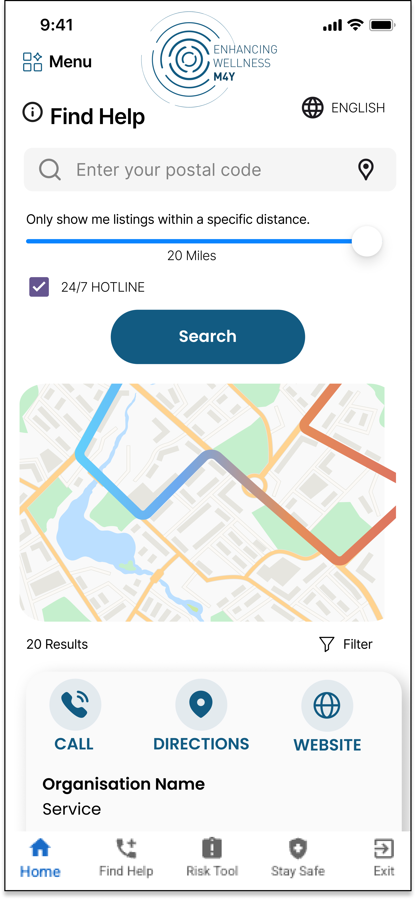
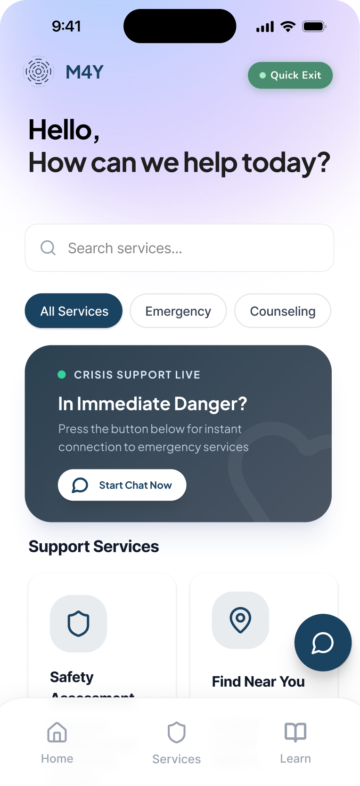
For a monitored user, the absence of a quick exit isn't an inconvenience — it's a trap. The final design treats exit as the most important affordance in the app. A green "Quick Exit" chip persists in the top-right corner of every screen. One tap closes the app, clears session history, and redirects to a neutral site.
Onboarding: From Identity Exposure to Private Welcome
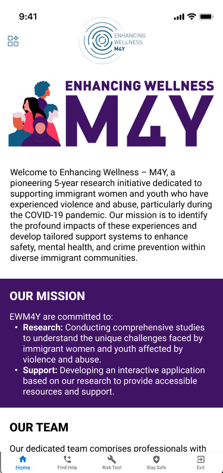
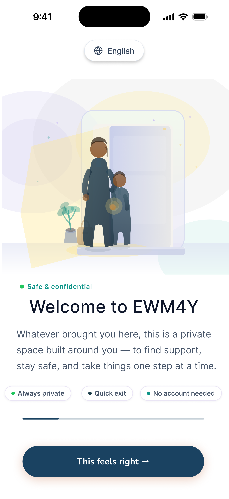
The onboarding sequence now serves a dual purpose: it builds trust with the user through calm, reassuring language, while also functioning as the app's disguise. The surface reads as a wellness app. The purpose is revealed gradually, only once a user has already entered a private space.
Risk Assessment: From Exposed Label to Embedded Conversation
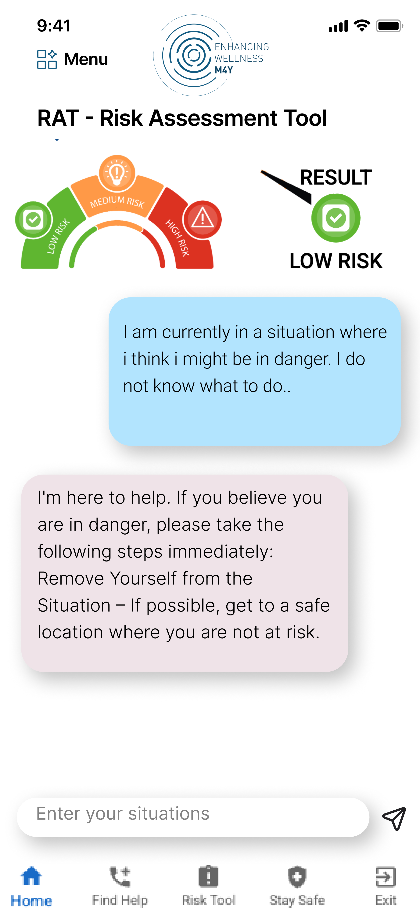
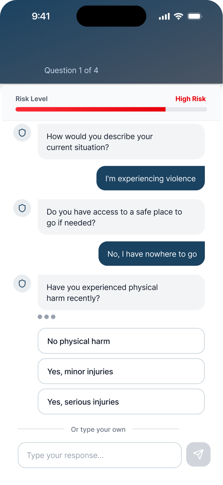
The shift from a form-based assessment to a conversational AI interface also carries a psychological benefit. A chat feels like support. A form feels like documentation. For users who are distrustful of systems, this distinction matters. The tab is now labeled "Risk Tool" — neutral enough to pass a casual glance without revealing the feature's purpose.
Visual Language: From Clinical to Calm
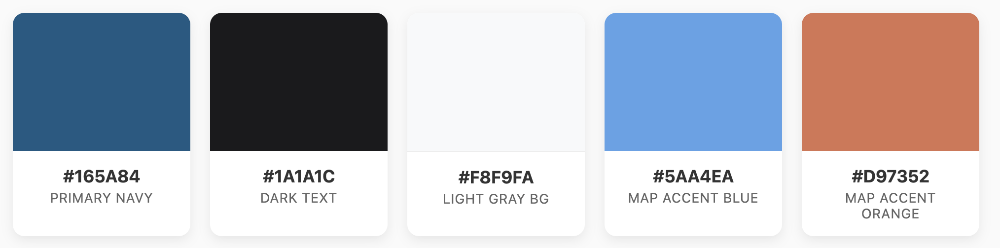
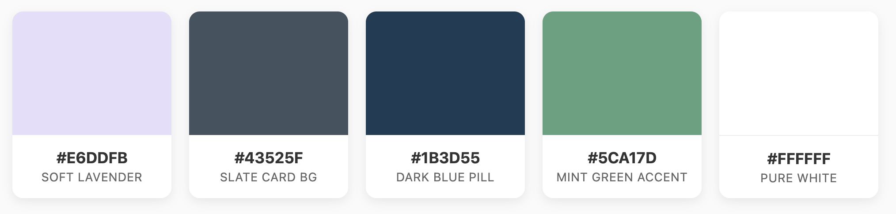
Visual tone is not cosmetic in trauma-informed design. Color palette, typography, and spatial density communicate a mood before a word is read. The soft lavender and warm neutral palette with generous white space signals: this is a safe place to be.
Final Design
The final EWM4Y design reads, at a glance, like a calm wellness app. That is entirely intentional. The layered experience reveals itself gradually to users who need it, while presenting a neutral, low-risk surface to anyone else.
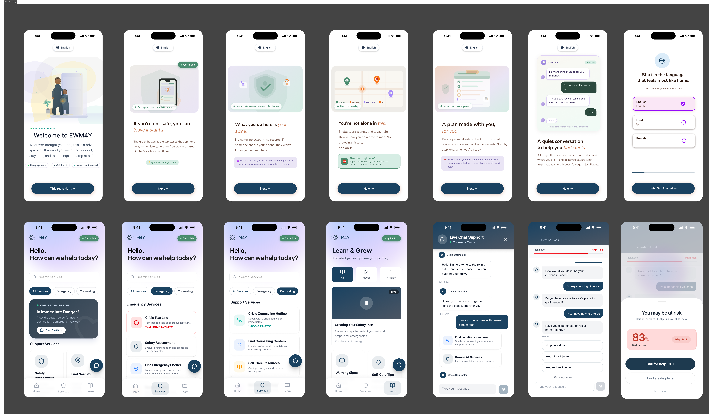
Onboarding — A Private Welcome
Users are welcomed through a sequence of illustrated slides that introduce the app's purpose gradually: from a private space to a safety tool. Language selection is the final onboarding step — a full-screen prompt with prominent language options. The sequence builds trust before any crisis content appears.

Home — Always Ready
The home screen opens with a warm greeting and an immediate service search. A "Crisis Support Live" banner is persistent but non-alarming. Services are organized into All, Emergency, and Counseling tabs for fast navigation. The Quick Exit chip is always visible in the top bar.
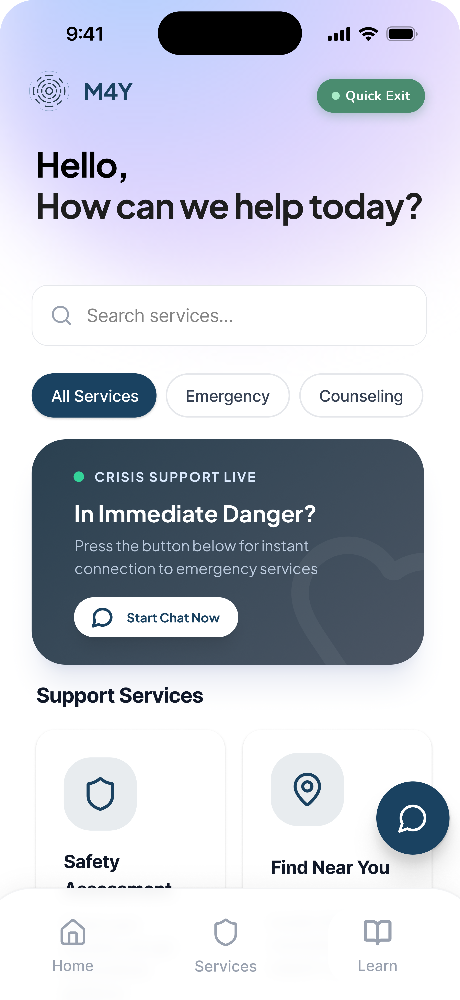
Safety Assessment — A Conversation, Not a Form
The AI-assisted Risk Tool opens as a calm chat with a Crisis Counselor persona. Four questions in plain language lead to a risk score and color-coded level. High-risk users see an immediate "Call for help – 911" and "Find a safe place." The design escalates the response, not the user's anxiety. No data is stored.
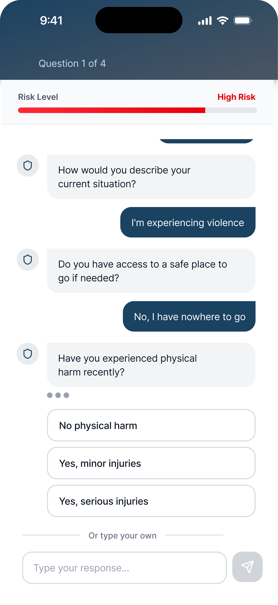
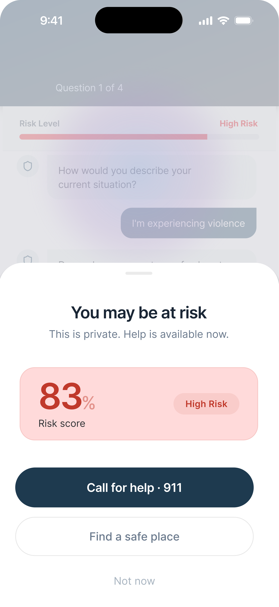
Find Help & Learn — Resources and Disguise
The resource finder surfaces shelters, counseling centers, and hotlines within a user-selected radius. Contact information uses copy-to-clipboard rather than auto-dial. The Learn section packages safety education in a magazine-style grid — functionally a wellness content hub, exactly as intended.
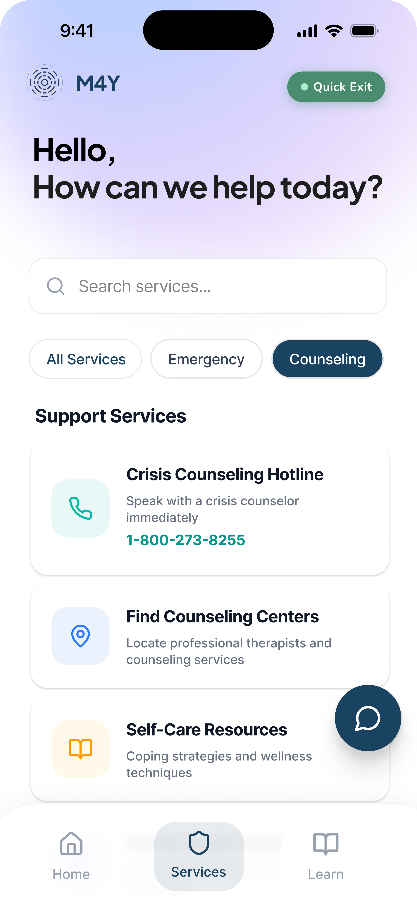
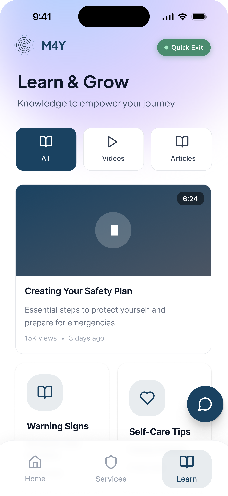
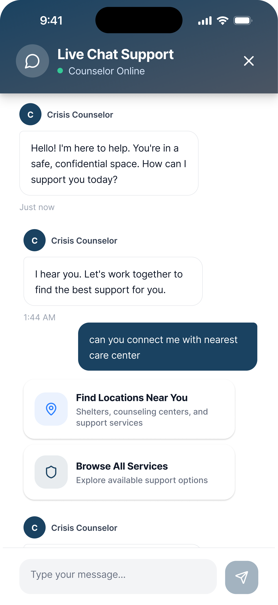
Reflection
Designing EWM4Y was a lesson in what design is actually capable of — and what it is responsible for. Most UX work operates in a comfortable space where a bad decision results in user confusion or a lower conversion metric. Here, a bad decision had consequences that were harder to quantify and impossible to ignore.
The hardest challenge wasn't the interface. It was designing for users I couldn't safely research with standard methods. Typical user interviews require trust, openness, and safety — conditions that couldn't always be created with survivors of ongoing violence. Much of the decision-making had to rely on close reading of the PRD, trauma-informed design literature, and responsible inference about user needs. Working with incomplete information while the stakes were this high required a kind of humility that I hadn't had to apply before.
With more time and access, I would prioritize community-informed testing in safe environments — working with partner organizations to reach users who could validate assumptions about the disguised interface, the assessment flow, and the exit mechanism. The onboarding language in particular would benefit from multilingual usability testing. What reads as warm and trustworthy in English may carry different connotations in Farsi or Punjabi.
What this project changed for me is how I answer the question: who am I designing for, and what do I owe them? In most work, the answer is about understanding the user's goals and reducing friction. Here, the answer was about understanding the user's danger and designing against it. The most important design decision turned out to be knowing when to get out of the user's way — a Quick Exit that always works, a conversation that never stores your words, a screen that looks like something else when it needs to. Design that protects the user even when they're not looking at it.